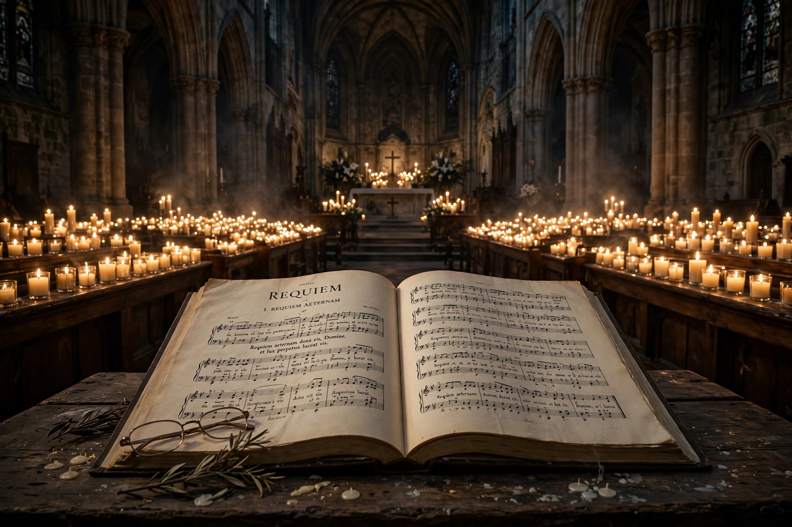

Requiem
For other uses, see Requiem (disambiguation).
| Requiem Mass | |
|---|---|
| Name | Missa pro defunctis (Mass for the dead) |
| Named from | Introit: "Requiem aeternam dona eis, Domine" |
| Purpose | Funerals, All Souls' Day, commemorations |
| Famous settings | Mozart, Verdi, Fauré, Brahms (Ein deutsches Requiem) |

A requiem (Latin: rest), or Requiem Mass, also known as the Mass for the dead (Missa pro defunctis), is a Mass of the Catholic Church offered for the repose of the souls of the deceased, using a particular form of the Roman Missal. It takes its name from the first word of the Introit, Requiem aeternam dona eis, Domine ("Grant them eternal rest, O Lord"). Musical settings of the propers of the requiem mass are also called requiems, and the term has expanded to describe any musical composition for the commemoration of the dead.
The liturgy
The requiem mass differs from the ordinary mass: joyful elements such as the Gloria and Alleluia are omitted, and the sequence Dies irae ("Day of Wrath"), a medieval hymn on the Last Judgment, traditionally forms part of it. Requiems are celebrated at funerals, on All Souls' Day (2 November), and at memorial services. The Second Vatican Council's liturgical reforms simplified the rite and made the Dies irae optional; black vestments may be replaced by violet or white.
Structure
A musical requiem typically sets some or all of:
- Introit — Requiem aeternam
- Kyrie eleison
- Sequence — Dies irae
- Offertory — Domine Jesu Christe / Hostias
- Sanctus and Benedictus
- Agnus Dei
- Communion — Lux aeterna
- Responsory Libera me and In paradisum (often included)
Musical settings
The earliest surviving polyphonic requiem is by Johannes Ockeghem (c. 1470s–1480s). Hundreds of settings followed, most famously Mozart's Requiem in D minor (1791), left unfinished at his death; Berlioz's Grande messe des morts (1837), scored for enormous forces; Verdi's dramatic Messa da Requiem (1874); and Fauré's serene Requiem (1887–1900), which omits the Dies irae almost entirely. Brahms' Ein deutsches Requiem (1868) uses German biblical texts rather than the Latin liturgy.
Modern requiems
Twentieth-century composers extended the genre: Britten's War Requiem (1962) interleaves the Latin mass with Wilfred Owen's war poems, and composers such as Ligeti, Penderecki and Andrew Lloyd Webber have written requiems for concert performance. The term is also used figuratively for laments in other media.